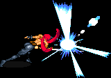

|
|
|
THIEF |
 |
| |
여기서의 데미지는 상대적인 데미지를 뜻합니다.
이곳에 적은 콤보가 전부는 아니므로 자신만의 콤보를 개발하는 것도 좋습니다.
시프의 일반 A공격중 2~3타째 공격은 콤보로 연결하기에 좋지 않습니다.
그렇기 때문에 2히트하며 연속으로 넣어 줄 수 있는 슬래쉬가 콤보의 핵심이 됩니다.
초반의 무기 데미지가 파이터에 비해 약하고 또 무기레벨이 늦게 올라서 처음엔 좀 약할 수 있으나
후반으로 갈 수록 파이터를 능가하는 공격력을 보여줍니다.
강공격:→A 슬래쉬:↓↘→A 대공기:↓↑A |
| |
일반 공격을 할 경우 화면이 번쩍이면서 우측 그림과 같은 효과가 나올 때가 있습니다.
'크리티컬 데미지' 혹은 '맥시멈 데미지(줄여서 맥뎀)'가 나오는 상황인데
이경우 적이 바로 쓰러지니 콤보시도시 이점을 유의하시기 바랍니다. |
 |
|
| |
A → 강공격 → 슬래쉬 → 대공기 → 다운공격으로 A+B(선택사항)
(데미지 : 6.5+@ / 성공률 : 높음)
가장 쉽고 보편적인 콤보로 마땅히 콤보를 넣을만한게 없는 텔아린에게 유용합니다.
파이어 로드를 착용하고 있다면 콤보후 A+B를 다운공격으로 넣어주면 더욱 큰 데미지를 줄 수 있습니다.
오우거나 D.비스트의 경우는 대공기의 오일공격을 맞으면 A+B를 다운공격으로 넣을 수가 없으므로
A+B를 쓰고 싶다면 슬래쉬 2히트 후 대공기를 약간 늦게 넣어서 오일에 닿지 않게 해야 합니다.
일반 몬스터, 하피의 경우 대공기의 오일공격이 맞았다면 추가 콤보를 이어서 넣을 수 있습니다.
가용 보스 : 다크 워리어, 하피, 텔아린, 오우거, 만티코어, D.비스트
|
|
|
| |
슬래쉬 → 슬래쉬 → 강공격 → 슬래쉬 → 대공기
(데미지 : 최대 10+@ / 성공률 : 보통)
다크 워리어에게 사용 가능한 콤보이며 투척무기를 사용해서 가드를 무산시키고 사용하는 것이 좋습니다.
구석이거나 광분한 상태가 되면 두번째 슬래쉬까지만 넣는게 좋습니다.
가용 보스 : 스테이지 중앙에서의 다크 워리어
|
|
|
| |
슬래쉬 → 슬래쉬 → 슬래쉬 → 슬래쉬
(데미지 : 12 / 성공률 : 보통)
첫번째 슬래쉬를 맞으면 구석으로 튕기니 스테이지 구석이 아니라면 슬래쉬 후
바로 슬라이딩을 해서 거리를 맞추는게 좋습니다.
나그파의 경우 HP가 꽉 차있다 하더라도 콤보 한번으로 끝낼 수 있습니다(1인 플레이 기준).
일반 몬스터에게도 유용하게 사용할 수 있는 콤보 입니다.
가용 보스 : 하피, 나그파
|
|
|
| |
점프 혹은 2단 점프 후 슬링 → 슬래쉬 → 슬래쉬 → 슬래쉬(1히트) → 대공기(혹은 슬링 연사)
(데미지 : 10.5+@ / 성공률 : 보통)
아이템 사용에 제한을 걸어두는 일명 '노시리즈'같은 게임에서 주로 쓰며 보통 게임이라도 아이템이 다 떨어졌을 때
쓸 만 합니다. 슬링 투척 후 그냥 슬래쉬 3번을 넣어줘도 무방합니다.
역시 구석이거나 광분한 상태가 되면 두번째 슬래쉬까지만 넣는게 좋습니다.
가용 보스 : 다크 워리어
|
|
|
| |
※ 다운공격으로써의 A+B의 활용
시프의 A+B는 전 클래스 중 최악이라 불릴 정도로 성능이 안좋은 기술로 평가 받았었습니다.
그러나 LB오일을 이용한 기술이라는 점 때문에 다운공격으로 활용 할 경우 기대 이상의 효과를 볼 수 있습니다.
당연히 파이어 로드가 있는 것이 효과가 훨씬 좋으며 최대한 LB오일을 많이 맞추는것이 중요합니다.
그리고 덩치가 큰 보스 일수록 효과가 좋습니다.
가용 보스 : 나그파와 사라만다를 제외한 다운이 되는 보스 전부
|
|
|
| |
※ 대 하피 전용 무한 콤보 (데미지 : ∞ / 성공률 : 다른 적들이 없다면 높음, 그외엔 낮음)
A+B가 히트수를 초기화 시킨다는 점을 이용한 무한 콤보입니다.
1set → 2set → 3set → 4set → (이하 34set → 4set 반복)
1set : 4히트이내의 공격(예를 들면 A / A → A / A → 슬래쉬 / A → 강공격 → 슬래쉬)
히트수가 많을 수록 아래의 2set에서 대공기를 넣었을 때 적이 높게 뜰 확률이 높습니다.
2set : 대공기 → 대쉬 점프 공격
대공기의 LB오일에 맞아서 스테이지 가장 상단으로 튕겨져야 합니다. 튕겨진 하피를 대쉬 점프 공격으로
정확히 맞추면 하피는 구석으로 몰리며 이후 콤보를 진행하는데 훨씬 수월 해 집니다.
3set : 슬래쉬 2~3번 반복
이쯤 되면 뒤쪽에서 셰도우 엘프의 견제가 시작되며 때에 따라 셰도우 엘프가 전멸해서 파이어 볼의 공격이 날아 올
수도 있습니다. 따라서 슬래쉬 반복횟수를 조절하거나 4set으로 넘어가거나 하는 적절한 상황대처가 요구됩니다.
4set : A+B
하피가 스테이지 가장 상단에 있는 상황이라면 슬래쉬2~3방을 맞고 공중에 떠 있는 상태에서 A+B의 오일에 맞으면
다시 튕겨 오르며 이때 타이밍을 맞춰 3set의 슬래쉬 콤보를 넣어 줄 수 있습니다.
다만 A+B가 HP를 소모하는 공격이므로 콤보를 사용하다보면 HP가 계속 줄어들며 이는 곧 조금이라도 실수시 사망으로
이어지기 쉽다는 뜻이므로 여러모로 쉽지 않은 콤보입니다. 실전에서 쓰려면 상당한 연습이 필요합니다.
|
|
|
| |
그 외에 일반 몬스터를 상대로 쓸만 한 콤보
백스텝(back stab) → (슬링 5연사 / 슬래쉬)
백스텝 후 거리가 멀어지면 슬링으로 추가타를 넣고 가깝다면 슬래쉬를 넣습니다.
되도록이면 1 대 1 상황에서 쓰는 것이 좋습니다.
대공기의 LB오일 공격이 히트 후 → 슬래쉬 x 4
상하이동으로 적들을 최대한 모은 후 LB오일을 맞추면 적들이 공중에 뜨는데 이 때
재빠르게 접근해서 콤보를 넣습니다. 슬래쉬 x 4 이외에 다른 콤보를 넣어도 무방하며
8히트를 넘기기 전에 다시 대공기의 LB오일을 맞춘다면 무한 콤보도 가능합니다.
(픽포켓 → 슬래쉬) x 4
슬래쉬 사이에 픽포켓을 시도 함으로써 상대를 쓰러뜨리지 않고 좀 더 빨리 스틸 할 수 있습니다.
후반의 HP가 많은 적들에게 (특히 헬하운드) 쓸만 한데 되도록이면 1 대 1 상황에서 쓰는게 좋습니다.
|
|
| |
※ '날다람쥐' (고속 이동 2단 점프)
점프 이동시의 모습이 마치 날다람쥐와 비슷하다 하여(비슷한가?) '날다람쥐'라 불리는 고속 이동 기술입니다.
화면 끝에서 반대편 끝까지 아주 빠르게 이동할 수 있으며 점프하는 높이 또한 꽤나 높아서 레드 드래곤의
정면 브레스마저 피할 수 있습니다.
1. 가고자 하는 방향의 반대편을 바라본다.
2. 점프를 한다(점프만으론 타이밍을 잡기 쉽지 않으므로 A버튼이나 D버튼(슬링)으로 타이밍을 잡습니다.)
3. 2단 점프를 실행하면서 거의 동시에 방향키 혹은 레버를 반대편으로 향하면서
A버튼 혹은 D버튼(슬링)을 누른다.
말로는 설명이 쉽지 않은 기술이므로 영상을 보고 타이밍을 많이 연구 해 보는게 좋습니다.
|
|
|
| |
※ '반 날다람쥐'
시프에게만 국한된 기술은 아니며 드워프를 제외한 다른 클래스도 가능하지만 시프만큼의 이동거리가 나오지 않습니다.
(이동거리 : 시프 > 매직유저 > 파이터 = 클레릭 = 엘프 // 드워프는 점프특성상 불가능)
날다람쥐와 기본적인 것은 같지만 이 경우는 점프후 2단점프를 생략하고 방향전환과 함께 바로 A키나 D키를 누릅니다.
다른 클래스의 경우 방향전환 전에 바라보고 있던 방향으로 방향키나 레버를 넣어주면(왼쪽을 보고 있었다면 왼쪽으로)
반동으로 더 멀리 이동이 가능합니다.
시프의 경우 숙련만 잘되면 이 기술만으로 에저홀덴을 잡을 수도 있습니다.
|
|
|
| |
※ '하하' (대쉬 캔슬 이동)
대쉬공격을 백스텝을 통해 거의 딜레이 없이 캔슬하고 다시 대쉬를 하는 기술로 역시 시프에게만 국한된 기술은
아니며 시프가 이 기술을 시전시 '하하'라고 들리는 듯한 음성을 내기에 이렇게 불립니다.
사용자의 센스에 따라 성공률이 아주 크게 좌우되며 실용성 자체를 놓고 보면 날다람쥐보다는 떨어지지만
사용 해 보면 재미있고 멋있어 보이기도 해서 종종 쓰게 되는 약간 퍼포먼스적인 성격이 있는 기술입니다.
커맨드 : 대쉬 A → (거의 동시에 누르듯 →+B) → (→를 유지하면서 + B)
(오른쪽을 바라보고 있을 때 기준이며 왼쪽이라면 방향키/레버를 반대로 입력)
공격중에 B를 누르면 공격이 캔슬이 되면서 백스텝이 나가는 원리를 이용하고 그 백스텝마저도 캔슬을 하는 것인데
(→+B)와 (→유지+B)의 입력간격이 빨라야 됩니다.
백스텝의 성격상 시프와 드워프, 매직유저는 입력간격이 좀 늦더라도 어쨌든 되긴 하지만
아예 점프를 해버리는 파이터, 클레릭, 엘프는 타이밍이 좀 더 정확해야 하므로 상대적으로 조금 더 어렵습니다.
|
|
| |
|
| |
| go to Top |
| 2007 Crassus & legon. All rights reserved. |